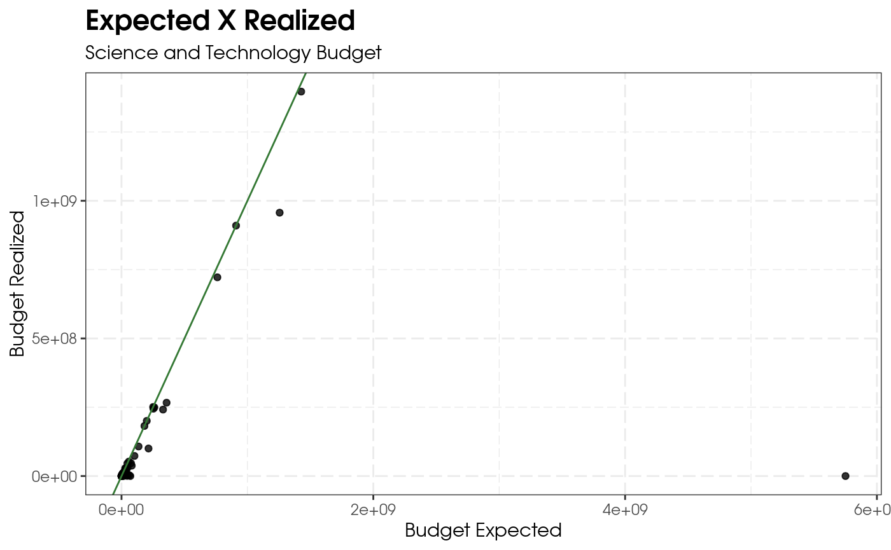

This package intend to facilitates the workflow for R users who want to analyze data from Portal da Transparência. The package is based on the section ‘download de dados’1. The Portal da Transparência of the brazilian federal government has data about the public budget of the country. Among these data we can analyze the expenses and revenues of the government as well as data on corporate cards.
In the next piece of code we will visualize the expected versus realized budget for the science and technology ministry in 2016.
library(transpbrr)
#> Loading required package: data.table
#>
#> WARNING: This package is under development
download_orcamento(year = 2016) %>%
dplyr::filter(`NOME ORGAO SUPERIOR` == 'MINIST.DA CIENCIA,TECNOL.,INOV.E COMUNICACOES') %>%
dplyr::group_by(`NOME ACAO`) %>%
dplyr::summarise(initial = sum(`ORCAMENTO INICIAL (R$)`),
updated = sum(`ORCAMENTO ATUALIZADO (R$)`),
final = sum(`ORCAMENTO REALIZADO (R$)`)) %>%
ggplot2::ggplot(ggplot2::aes(x = updated, y = final)) +
ggplot2::geom_point(alpha = .8) +
ggplot2::geom_abline(intercept = 0, slope = 1, col = '#357935') +
ggplot2::theme_bw(base_family = 'AvantGarde') +
ggplot2::theme(plot.title = ggplot2::element_text(face = 'bold', size = 16),
panel.grid.major = ggplot2::element_line(linetype = 'longdash'),
panel.grid.minor = ggplot2::element_line(linetype = 'longdash'),
strip.background = ggplot2::element_rect(fill = '#357935',
colour = '#357935'),
strip.text = ggplot2::element_text(color = '#ffffff')) +
ggplot2::labs(x = 'Budget Expected', y = 'Budget Realized', title = 'Expected X Realized', subtitle = 'Science and Technology Budget')
Loading data on expenses execution for January-2014.
expenses <- download_exec_desp(year = 2014, month = 1)Loading data on transfer of resources for January-2014.
expenses <- download_exec_desp(year = 2014, month = 1)The brazilian government has three kinds of corporate cards, they are called payment cards (Cartoes de pagamento, in portuguese). Basically, you can download data from all of these cards using this function. You just need to specify a year, month and type. Where type can assume the values:
Example:
# 1
cpgf <- download_cp(year = 2014, month = 1, type = 'cpgf')
# 2
cpcc <- download_cp(year = 2015, month = 1, type = 'cpcc')
# 3
cpdc <- download_cp(year = 2015, month = 1:2, type = 'cpdc')